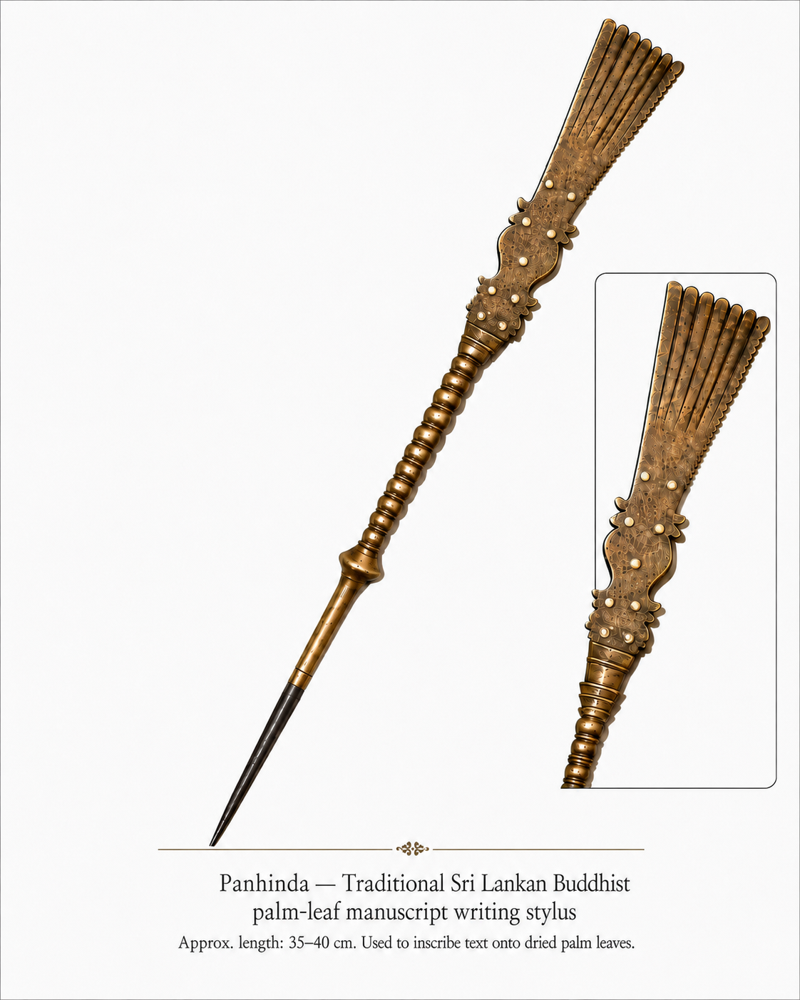

The writing instrument
More than a pen.
The panhinda does not lay ink on the leaf. Its steel tip cuts a fine groove, while the bronze handle carries a visual map of Buddhist teaching. The instrument makes the act of writing inseparable from what is being preserved.
- Seven bladesSeven Factors of Enlightenment
- Nine dotsNine Virtues of the Buddha
- Four linesFour Noble Truths
- Eight spheresNoble Eightfold Path
- CounterweightNirvana
- Steel pointThe tip that inscribes the leaf